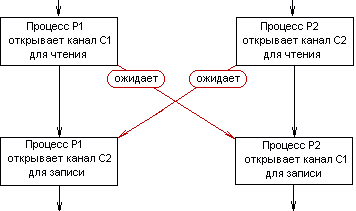
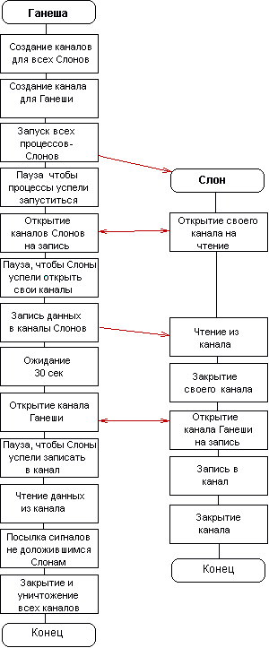

Пример выполнения лабораторной работы N12 |
В этой работе мы моделируем ту же "легенду", что и в предыдущей: стадо Слонов движется вдоль цепочки луж. Отличия состоят в том, что найденные лужи Ганеша назначает Слонам по списку. Можно представить, что Ганеша движется впереди стада и возле каждой найденной лужи оставляет "метку", определяющую, какому Слону данная лужа предназначена. Список Слонов при этом играет роль кольцевой очереди, но Ганеша учитывает потребность каждого Слона и после выделения ему достаточного количества воды больше не планирует его на водопой.
Реализация этой модели при помощи именованных каналов состоит в следующем. Для выдачи каждому Слону его порций воды создается отдельный канал. Этот канал является выходным для Ганеши и входным - для Слона. Имя этого канала совпадает с именем Слона. Для приема докладов от Слонов об окончании водопоя создается один канал с именем "Ganesha ". К выходному концу этого канала подключен Ганеша, а к входному - все Слоны.
При нахождении очередной порции воды Ганеша заносит размер этой порции (число типа long в канал того Слона, которому порция предназначена. Слон считывает из своего входного канала размер порции и приступает к ее "потреблению".
Обеспечив всех Слонов водой Ганеша "погружается в спячку" на 30 сек. Слон, "употребив" очередную порцию анализирует остаток своей потребности. Если потребность не удовлетворена, Слон считывает из своего входного канала размер следующей порции и т.д. Если потребность Слона удовлетворена, он записывает в свой выходной канал (входной канал Ганеши) свое имя - как рапорт об окончании водопоя.
"Пробудившись из спячки" Ганеша читает содержимое своего входного канала - до окончания данных в нем. Слонов, имена которых считаны из канала Ганеша считает нормально завершившимся. Остальным Слонам Ганеша посылает сигнал завершения, и они гибнут.
Некоторую сложность при реализации данной модели может представлять синхронизация работы процессов с каналами. При этом следует учитывать следующие обстоятельства:

Строго говоря, для синхронизации деятельности процессов следовало бы использовать специальные средства, но чтобы избежать усложнения примера, мы попытались обойтись без них и построить алгоритмы функционирования процессов таким образом, чтобы предупредить или, по крайней мере,свести к минимуму вероятность возникновения нежелательных эффектов. Укрупненная схема этого алгоритма показана на рисунке ниже. Красными стрелками показаны моменты выполнения, в которые происходит принудительная синхронизация процессов - за счет возможных ожиданий при выполнении операций над каналами.

Кодовые модули, реализующие эту программную модель - ganesha4.c и elephant4.c - показаны ниже.
В программах используються следующие вызовы:
Программный модуль, реализующий деятельность Ганеши (ganesha4.c ) и программный модуль, реализующий деятельность одного Слона (elephant4.c) см. в /home/Metod/OS/2010/Lab_2010/Part_2/man/Prog/lw12.
Ниже приводится пример выполнения этой модели
18:21:20.559 - Начало работы 18:21:20.576 Слон Aun приступил 18:21:20.584 Слон Tandy приступил 18:21:20.594 Слон Maya приступил 18:21:20.605 Слон BakZap приступил 18:21:20.616 Слон Hao приступил 18:21:20.619 Слон Assam приступил 18:21:20.625 Слон Hathy приступил 18:21:20.634 Слон Kitty приступил 18:21:21.630 Канал для Tandy открыт - 3 18:21:21.630 Канал для Aun открыт - 4 18:21:21.631 Канал для Assam открыт - 5 18:21:21.631 Канал для Maya открыт - 6 18:21:21.631 Канал для BakZap открыт - 7 18:21:21.632 Канал для Hao открыт - 8 18:21:21.632 Канал для Hathy открыт - 9 18:21:21.633 Канал для Kitty открыт - 10 18:21:22.640 Слон Tandy получил 766 18:21:22.660 Слон Aun получил 1100 18:21:22.730 Слон Assam получил 11 18:21:22.730 Слон Assam выпил 11, остаток потребности - 2888 18:21:22.750 Слон Maya получил 1619 18:21:22.815 Слон BakZap получил 8 18:21:22.816 Слон BakZap выпил 8, остаток потребности - 2242 18:21:22.850 Слон Hao получил 1476 18:21:22.930 Слон Hathy получил 1518 18:21:22.950 Слон BakZap получил 1886 18:21:23.080 Слон Kitty получил 213 18:21:23.120 Слон Assam получил 1047 18:21:30.410 Слон Kitty выпил 213, остаток потребности - 1287 18:21:30.411 Слон Kitty получил 809 18:21:30.904 Слон BakZap выпил 1886, остаток потребности - 356 18:21:30.904 Слон BakZap получил 356 18:21:32.314 Слон BakZap выпил 356, остаток потребности - 0 18:21:33.749 Слон Assam выпил 1047, остаток потребности - 1841 18:21:33.750 Слон Assam получил 1588 18:21:33.839 Слон Maya выпил 1619, остаток потребности - 530 18:21:34.080 Слон Maya получил 233 18:21:34.830 Слон Hathy выпил 1518, остаток потребности - 1932 18:21:34.830 Слон Hathy получил 911 18:21:35.278 Слон Maya выпил 233, остаток потребности - 297 18:21:35.278 Слон Maya получил 297 18:21:36.720 Слон Maya выпил 297, остаток потребности - 0 18:21:40.201 Слон Hathy выпил 911, остаток потребности - 1021 18:21:40.201 Слон Hathy получил 986 18:21:45.242 Слон Hathy выпил 986, остаток потребности - 35 18:21:45.243 Слон Hathy получил 35 18:21:45.243 Слон Hathy выпил 35, остаток потребности - 0 18:21:46.428 Слон Hao выпил 1476, остаток потребности - 124 18:21:46.428 Слон Hao получил 124 18:21:46.504 Слон Assam выпил 1588, остаток потребности - 253 18:21:46.504 Слон Assam получил 253 18:21:47.419 Слон Hao выпил 124, остаток потребности - 0 18:21:47.933 Слон Assam выпил 253, остаток потребности - 0 18:21:48.882 Слон Kitty выпил 809, остаток потребности - 478 18:21:48.883 Слон Kitty получил 478 ВРЕМЯ ОЖИДАНИЯ ИСТЕКЛО 18:21:54.299 Слон Kitty выпил 478, остаток потребности - 0 18:21:55.280 Слон BakZap доложил о завершении 18:21:56.290 Слон Maya доложил о завершении 18:21:57.300 Слон Hao доложил о завершении 18:21:58.310 Слон Hathy доложил о завершении 18:21:59.320 Слон Assam доложил о завершении 18:22:00.273 Слон Aun выпил 1100, остаток потребности - 0 18:22:00.330 Слон Kitty доложил о завершении 18:22:01.340 Слон Aun доложил о завершении 18:22:02.350 Слон Tandy погиб |